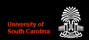

Bangladesh
Student Association (BSA)
@ University of South
Carolina
News & Events
BSA officially said goodbye to Iftekhar Chowdhury from Department of Electrical Engineering, USC on 5th December, 2010. Iftekhar has completed his PhD and is joining INTEL at Chandler, Arizona as Process Engineer. BSA wishes all the best to Iftekhar for a successful future.
BSA officially said goodbye to Khandaker Zahid from Department of Geology, USC on 20th November, 2010. Zahid has completed his PhD and is joining University of Texas at Austin as Post-Doctoral Fellow. BSA wishes all the best to Zahid for a successful future.
BSA participated at the International Bazaar festival @ Russel House on 15th November, 2010. BSA members Shovon, Soniya & Rassel along with BSA committee members made the event a success.
BSA participated at the Richland’s International Flavors on Decker festival on 13th November, 2010. BSA members Shovon, Rabbi, Sakib, Omi, Faisal & Rassel along with BSA committee members made the event a success. Rubaiyat Sharmin(Tatini) presented two brilliantly choreographed dance that were very well received by the sizable audience.
BSA organized Fresher's Reception, 2010 to welcome the Bangladeshi students who joined USC in Spring, 2010 and Fall, 2010. The program was held at the lounge of South Quad, USC on October 1, 2010.
View Photos
The new committee for the 2010-2011 Academic Session was formed on 31st July, 2010 by unanimous decision of the members of the BSA. USC
alumni Md. Monirul Islam conducted the selection process.
The List of New Committee Members
BSA officially said goodbye to M Yakut Ali from Department of Mechanical Engineering, USC on 31st July, 2010. Yakut has completed his Masters and is moving to University of Illinois at Urbana-Champaign(UIUC) to pursue his PhD. BSA wishes all the best to Yakut for a successful future.
BSA officially said goodbye to M Riazuddin Ahmed from Department of Mechanical Engineering, USC on 21st May, 2010. Riaz has completed his Masters and is joining as Lecturer at Khulna University of Engineering & Technology, Bangladesh . BSA wishes all the best to Riaz on his future endeavor.
BSA in collaboration with the Bangladeshi community living in Columbia, SC organized the Annual Picnic
on 9th May, 2010 at the Weston Lake Recreation Area in Fort Jackson, SC.
View Photos
Bangladeshi students studying @ USC have shown an outstanding
performance at the 2010 USC Graduate Student Awards competition on
2nd April, 2010 at the Russell House. They have scored a total of
seven positions in both oral and poster competitions and one
outstanding student award from the Electrical Engineering
department.
List of Winners
BSA in collaboration with the Bangladeshi community living in Columbia, SC organized the 21st February
celebration commemorating the International Mother language day. The program was held on the evening of February 20, 2010
at the Capstone House, USC.
View Photos
BSA organized a farewell party for Abu Taher Mohammad Sayem(USC Alumni) and
Farzana Sultana Rita (USC PhD Student) who left
South Carolina community to Chicago, IL as Rita is finishing her PhD. This is the first official program arranged by
BSA with the help and participation of Bangladesh community at South Carolina. The party was held at
the lounge of South Quad, USC on January 24, 2010.
View Photos
The first BSA meeting of Spring'10 with all the BSA members was held on Friday, January 22, 2010 at 6:00 PM
at Amoco Hall, 301 S Main St. A number of decisions were finalized in the
meeting.
View Photos
BSA organized a trip to
Rat Island Creek, Charleston, SC on 10th October,
2009. Most of the Bangladeshi Students joined the trip. Photos of
the trip is shared by Khandaker Zahid.
View Photos
A kick off meeting with all the BSA members was held on Friday, October 9, 2009 at 6:00 PM
at Amoco Hall, 301 S Main St. Some important decisions were finalized in the
meeting.
View Photos